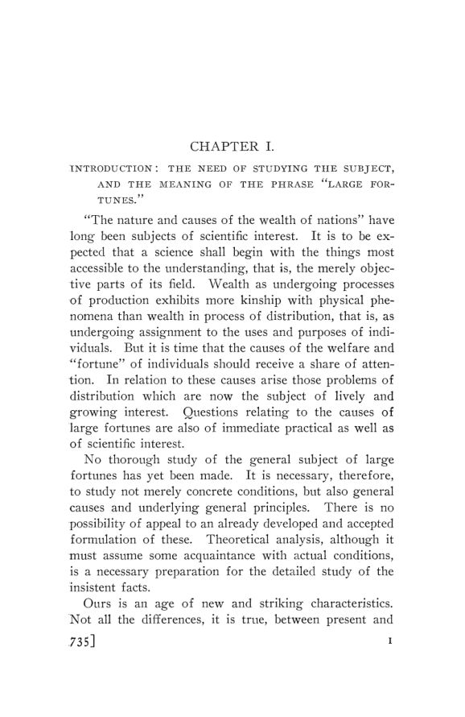

Watkins, 1907: de onde vêm as grandes fortunas
Leitura: 10 min
Em 1907, G. P. Watkins procurou causas impessoais para as grandes fortunas: a renda da propriedade, sem teto natural, a sociedade anônima, a grande escala e os ganhos com a valorização.


O sindicato de banqueiros liderado por Morgan que financiou a United States Steel Corporation se comprometeu a fornecer US$ 250 milhões, adiantou de fato US$ 25 milhões e lucrou US$ 50 milhões em doze meses. G. P. Watkins usa o caso para ilustrar o que chama de ganhos sem tempo do promotor e do financista: fechar os acordos de uma combinação de empresas depende tão pouco do tempo que não faz sentido exprimir o ganho como taxa anual sobre um investimento.
The Growth of Large Fortunes saiu em 1907 como o nº 4 do vol. 8 da terceira série das Publications of the American Economic Association, com 170 páginas em cinco capítulos. O autor afirma que nenhum estudo completo do tema fora feito e remete a um artigo seu sobre a evidência estatística da concentração da riqueza. No fim, define o livro como um tratado de causas: das consequências e dos remédios para a concentração, diz não ter nada a tratar ali.
Por que procurar causas impessoais?
O ponto de partida é metodológico. Uma teoria científica das grandes fortunas, argumenta Watkins, precisa de causas que permitam generalização. Influência política e privilégio não servem. A natureza humana também não: os homens não são muito diferentes do que eram, e a falta de escrúpulos não é nova. A pilhagem transfere riqueza, mas não explica sua concentração. Como os indivíduos ganham os prêmios é assunto de julgamento moral; a tarefa do economista é outra:
“O ofício da economia, porém, é apenas mostrar que os prêmios existem e por que existem.” (“The business of economics, however, is only to show that the prizes are there and why they are there.”)
Ele anuncia três pistas. A propriedade passou de formas mais democráticas para formas menos democráticas: o artesão com suas ferramentas e o comerciante atento ao estoque deram lugar ao capitalista que acompanha seus bens pelas cotações da bolsa. A máquina movida a energia substituiu a ferramenta. E a avaliação de tudo em dinheiro pôs no comando o homem que conhece os mercados.
Por que a renda do trabalho tem teto e a da propriedade não?
Watkins separa produção de aquisição. Produzir é um fato físico; adquirir é um fato econômico e jurídico, e pode ocorrer por troca, por doação ou por herança, sem produção própria. A grande empresa ampliou o valor possível do esforço individual, mas, segundo ele, ainda não fixou o valor de mercado da capacidade produtiva de homem algum acima de cerca de US$ 100 mil por ano. Há, no entanto, muitas rendas várias vezes maiores, que não se explicam pelo esforço de quem as recebe.
“Homens e coisas produzem; mas só os homens adquirem.” (“Men and things produce; but only men acquire.”)
Para medir a diferença, o autor compara a razão entre o decil superior e a mediana em várias distribuições. Nos salários semanais de nove ramos industriais, o decil superior fica sempre abaixo de duas vezes a mediana. Nos espólios inventariados em Massachusetts, chega a oito ou nove vezes. A conclusão é que a renda do esforço pessoal tem um limite técnico que freia a concentração; é na renda da propriedade que a aquisição sem produção própria encontra espaço.
O que é propriedade abstrata?
É o conceito central do livro. Watkins distingue a renda direta da riqueza, obtida por quem administra os próprios meios de produção, da renda de propriedade abstrata, recebida por quem entrega a outros a gestão e guarda apenas um direito a uma renda, de preferência fixa e segura. O credor hipotecário, o detentor de títulos e, em grande parte, o acionista vivem da segunda. Ações preferenciais, holdings e procurações tornam o acionista, na prática, um credor. Para o autor, do ponto de vista econômico pouco resta da distinção entre ações e títulos de dívida.
A consequência é a remoção de um limite natural. A riqueza concreta exige supervisão, e o cuidado cresce com o tamanho. A propriedade abstrata não: o número que representa os interesses de um homem pode ganhar mais alguns algarismos sem aumentar o trabalho exigido. O avanço da forma é rápido. Na Inglaterra, a sociedade de responsabilidade limitada por simples registro só foi possível a partir de 1855; o capital integralizado das companhias registradas cresceu quase 500% em 25 anos.
Os inventários confirmam a ligação com a concentração. No estado de Nova York, três quartos do valor dos espólios de US$ 50 mil ou mais eram bens móveis, sobretudo papéis; nos espólios abaixo de US$ 5 mil, a proporção se inverte, e três quartos eram imóveis. O espólio de Gould tinha 97% em bens móveis. Pelas contas do autor, o acionista médio das ferrovias americanas tinha provavelmente mais de US$ 20 mil em ações, enquanto a fazenda média, com suas construções, valia pouco menos de US$ 3 mil.
Onde nasceram os milionários?
O terceiro capítulo junta duas forças à propriedade abstrata: a produção em grande escala e o que Watkins chama de renda incremental, a valorização que acontece sem esforço do dono. O caso típico é a terra urbana. O valor dos imóveis de Nova York foi multiplicado por 12 em quarenta anos, enquanto a terra agrícola perdia valor na Europa e no leste americano. Nas cidades, dois terços das moradias eram alugadas; no campo, dois terços eram próprias.
Na indústria, a grande escala avançava sobre o pequeno empresário. Em 1905, as empresas incorporadas eram 23,6% dos estabelecimentos manufatureiros, mas tinham 82,8% do capital declarado. Na mineração, a expansão foi ainda mais rápida: a produção mundial de carvão passou de 12 milhões de toneladas em 1800 para 650 milhões em 1897, e os Estados Unidos ultrapassaram o Reino Unido em 1899.
A nota ao capítulo testa a tese com a lista de milionários americanos publicada pelo New York Tribune em 1892, que registra a origem de cada fortuna. A agricultura, o maior grupo de ocupação dos homens, aparece quase vazia: 84 nomes, e 47 deles fizeram fortuna criando gado no Oeste, isto é, explorando o domínio público. Comércio e transporte, indústria, minas e madeira, e a valorização de imóveis respondem pelo resto.
Juros baixos ajudam os ricos?
Watkins argumenta que sim, por uma via indireta. Quanto mais baixa a taxa de juros, maior a distância entre quem já tem renda de propriedade e quem só tem a do trabalho, porque o salário precisa render mais anos de poupança para gerar a mesma renda. Os juros reinvestidos crescem em progressão geométrica. Se a capacidade de dois homens está na razão de 1 para 2 e seus meios iniciais também, a desigualdade resultante será de 1 para 4. A propriedade abstrata, além disso, protege a fortuna herdada da falta de talento de quem a recebe:
“Conservar a riqueza já obtida é mais fácil do que nunca.” (“Keeping riches once gained is easier than ever before.”)
O mesmo instrumento, porém, pode funcionar no sentido contrário. Watkins duvida que os ricos sejam os principais poupadores e aponta a França, país de pequenos proprietários e de grande poupança, que se tornara a principal fonte de capital novo no mercado mundial. Os depósitos de poupança nos Estados Unidos passaram de US$ 43 milhões em 1850 para US$ 3,1 bilhões em 1905. Com papéis seguros, de renda fixa e risco diluído, a classe média poupadora poderia, com o tempo, comprar a parte dos grandes detentores.
O que mudou nos Estados Unidos?
O quarto capítulo começa com Franklin, que descrevia uma feliz mediania de cultivadores donos da terra, e com Tocqueville, que via poucas grandes fortunas e capital escasso. Para Watkins, o país que fora a terra da igualdade econômica era conhecido como a terra do multimilionário porque reunia, no grau mais alto, as tendências modernas: recursos naturais explorados em ritmo sem precedente, monopólios de transporte deixados a particulares mais do que em outros países, uma tarifa que favoreceu a indústria e, com ela, a formação de milionários, e um vasto campo para a especulação.
Na conclusão, o autor separa duas perguntas. A de que os pobres estariam empobrecendo ele considera falsa: estão melhor do que nunca, e a alta dos salários é outra questão. A da concentração da renda da propriedade é a do livro. Sua avaliação final é de que há concentração demais de riqueza, a ponto de ameaçar a igualdade de oportunidades, e de que o problema mais urgente seria conter o poder dos ricos ativos e de suas corporações.
Na minha leitura
Na minha leitura, a força do método está na escolha da medida. Ao comparar distribuições pela razão entre o decil superior e a mediana, Watkins obtém um indicador relativo, que não depende do nível de preços nem da moeda e permite pôr lado a lado salários americanos, inventários de Massachusetts e espólios franceses. A interpolação geométrica entre faixas é um cuidado técnico raro para a época. Os limites são os das fontes: inventários em valores brutos, listas de milionários feitas por reputação e estimativas de riqueza nacional montadas item a item, que o próprio autor trata como aproximações.
O argumento econômico mais duradouro, na minha leitura, é o da assimetria entre as duas rendas. A renda do trabalho esbarra num teto técnico; a renda da propriedade, quando separada da gestão, não esbarra em nada, e cresce por reinvestimento. Daí a ênfase na forma da propriedade, e não apenas na sua quantidade: a sociedade anônima e o título negociável são, para Watkins, ao mesmo tempo a causa da concentração e o meio possível de sua difusão. O que decide entre os dois resultados é o acesso de pequenos poupadores a papéis seguros e diversificados.
Glossário
- Propriedade abstrata (abstract property)
- direito a uma renda sobre bens que outros administram, como títulos de dívida, hipotecas e ações de grandes empresas.
- Renda incremental (incremental income)
- ganho com a valorização de um bem sem esforço do dono, como na terra urbana ou na especulação.
- Propriedade de papel (paper property)
- a parte da propriedade abstrata representada por títulos e documentos negociáveis.
- Decil superior
- valor acima do qual está o décimo mais alto de uma distribuição; dividido pela mediana, mede a desigualdade.
- Bens móveis e imóveis (personalty e realty)
- divisão jurídica dos espólios; nos bens móveis entram ações, títulos e hipotecas.
Fontes
- The Growth of Large Fortunes (pp. 1–170). JSTOR · Internet Archive (PDF)
- Sumário da edição no JSTOR: Publications of the American Economic Association, 3ª série, vol. 8, nº 4.
Documento em domínio público (EUA, publicado antes de 1931), via JSTOR Early Journal Content e Internet Archive. Resumo e comentário do autor deste site, sem afiliação com a American Economic Association. Encontrou um erro? Escreva: a correção é publicada no próprio texto, com data.
← Nº 85 · Edwards, 1907: as leis do trabalho em Connecticut, de 1650 a 1906 Nº 87 · O manual de 1908: 1.002 sócios, anuidades em queda e um boletim →